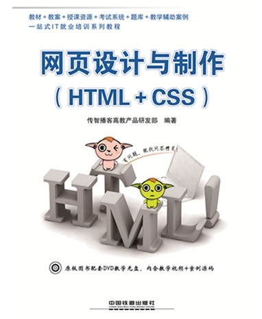
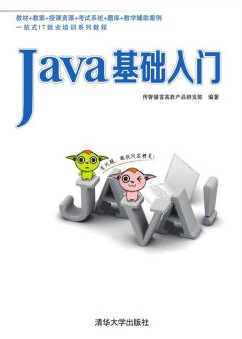
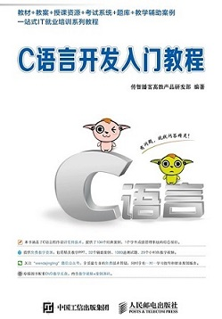

HTML与CSS是网页制作技术的核心和基础，两者在网页设计中不可或缺。本书从初学者的角度，详细介绍了使用HTML与CSS进行网页设计与制作的各方面内容和技巧。
PHP是一种运行于服务器端并完全跨平台的嵌入式脚本编程语言，是目前开发各类Web应用的主流语言之一。本书就是面向PHP初学者特别推出的一本入门教材，站在初学者的角度，以形象的比喻、丰富的图解、实用的案例、通俗易懂的语言详细讲解了PHP语言。
本书从初学者的角度详细讲解了Java开发中重点用到的多种技术。全书共11章，包括Java开发环境的搭建及其运行机制、基本语法、面向对象的思想，采用典型翔实的例子、通俗易懂的语言阐述面向对象中的抽象概念。
本书总结了市面多本C语言教材的优点，知识系统全面，涵盖数组、函数、指针、字符串、预处理、数据结构、文件操作、宏等主流C语言开发技术。在章节编排上力求循序渐进，在语言描述上力求准确、易懂，在案例设计上力求实用。
